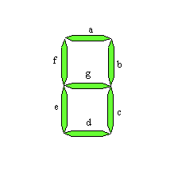
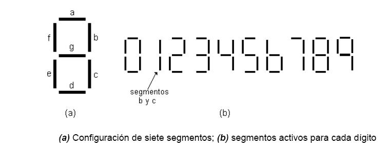
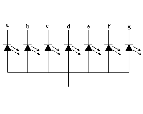
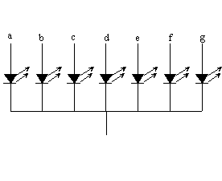
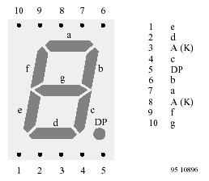
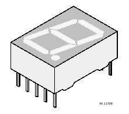
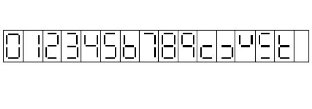
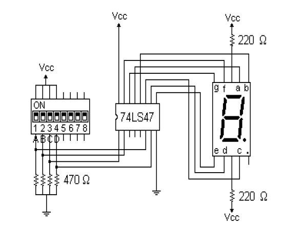

DISPLAY DE 7 SEGMENTOS, CIRCUITO MANEJADOR DE DISPLAY
El "display de 7 segmentos" es un dispositivo usado para presentar información de forma visual. Esta información es específicamente un dígito decimal del 0 (cero) al 9 (nueve), por lo que se intuye que que el código BCD está involucrado. El caso que nos atañe consta de 7 LED's (Light Emisor Diode), uno por cada segmento, que se encenderán o apagarán dependiendo de la información que se les envíe (dije que en este caso ya que existen también display 7 segmentos de cristal líquido, incandescentes, etc.).
El display 7 segmentos tiene una estructura similar a:

donde los 7 led's vienen indicados por las letras a, b, c, d, e, f y g. Con éstos pueden formarse todos los dígitos decimales. Por ejemplo, para formar el número tres deben activarse los led's a, b, c, d y g y desactivar los e y f. Para el uno se usan los led's b y c (ojo, esta es la combinación correcta no e y f). De forma análoga se procede para el resto de los casos. Veamos como queda:

Estos dispositivos pueden ser de tipo "Ánodo Común"

o "Cátodo Común"

En el caso de los display de ánodo común todos los ánodos (+) de los led's comparten la conexión. Estos display requieren un cero (una tierra) a la entrada de cada segmento para encenderlo. En el caso de los display de cátodo común todos los cátodos (-) de los led's comparten la conexión. Estos display requieren un uno (Vcc) a la entrada de cada segmento para encenderse. Todas las conexiones deben ser hechas a través de una resistencia para regular la cantidad de corriente que pasa a través de los led's.
Existen casos donde aparece un octavo segmento que suele usarse como punto decimal (ver el DP):

En la figura pueden verse también una de las configuraciones de pines más popular que contienen los display 7 segmentos y lo que representan. Los pines 3 y 8 son el ánodo común ó el cátodo común (dependiendo de cual sea el caso del 7 segmentos elegido) y aunque regularmente es indiferente cual de ellos conecten existen casos de modelos de displays en los que, por sus especificaciones, se requieren ambos conectados (o también quizá porque requieran cumplir alguna condición de manejo de corriente en su circuito). El encapsulado de este mismo display luce algo como:

para la versión que contiene sólo un dígito pero existen algunas para más dígitos como por ejemplo el de dos dígitos que es bastante usado o los de X dígitos y medio donde el medio viene dado por el hecho de que él sólo puede representar el número uno (tiene únicamente dos segmentos).
Existen circuitos integrados a nivel MSI que pueden realizar la tarea de manejar estos displays. Estos IC's son decodificadores, específicamente los conocidos como decodificadores de BCD a 7 segmentos, como son los casos de los IC 7446, 7447 y 7448 de la familia TTL. El 7446 y 7447 tienen salidas con lógica negativa por lo que enviarán un cero al segmento que se desea encender. Esto quiere decir que manejan Displays 7 segmentos de ánodo común. Ambos son Open Collector (bueno para el manejo de corriente necesario en algunos casos) y se diferencian únicamente en la salida que pueden manejar (30v para el 7446 y 15v para el 7447). Nuestros circuitos generalmente estarán construidos con tecnología TTL a 5V y por ello lo más seguro es que empleemos el 7447. En el caso del 7448 las salidas son de lógica positiva por lo que son usados con los dispositivos cátodo común. Todos comparten una característica: esperan a la entrada un número en BCD y es para cada una de ellas que desplegarán el dígito decimal correspondiente. Pero aún así, estos IC tienen respuestas para otras combinaciones a la entrada distintas de BCD. En el siguiente dibujo se muestran las salidas reflejadas en los display de 7 segmentos para todas las combinaciones binarias de 4 bits posibles:

Aparte de los dígitos decimales, se ven las salidas para cuando el decodificador tiene entrada de 1010, 1011, 1100, 1101, 1110 y 1111. Este último caso apaga todos los segmentos y por ello no se ve nada.
A continuación se muestra una implementación típica usada para la prueba de los dislay de 7 segmentos:

El display mostrará el dígito decimal que corresponda con el número binario seleccionado por los interruptores 1, 2, 3 y 4 del dip switch. En esta configuración se ve que las resistencias delimitadoras de corriente se colocan en el ánodo común (sabemos que son ánodo común por el uso del 7447) pero dependiendo de la implementación, e incluso a veces del display, en algunos casos pueden requerirse el uso de una resistencia por cada segmento y la conexión directa de los ánodos a Vcc.
A continuación veremos la implementación de un circuito decodificador de BCD a 7 segmentos usando tecnología SSI. Hallaremos sólo las funciones y no haremos el esquemático debido a lo grande del mismo. Asumiremos que la entada será única y exclusivamente un número BCD válido por lo que el resto de los casos no nos interesan (dont care). Asumiremos también que nuestro circuito será destinado a un display de cátodo común (por lo que tendrá salida con lógica positiva). Para ello empecemos con la tabla de la verdad. Sabiendo que la entrada será I (formada por I3I2I1I0) y las salidas serán los siete segmentos posibles a, b, c, d, e, f y g (como ya se ha mostrado), tenemos que:
| I3 | I2 | I1 | I0 | a | b | c | d | e | f | g | |
| 0 | 0 | 0 | 0 | 1 | 1 | 1 | 1 | 1 | 1 | 0 | |
| 0 | 0 | 0 | 1 | 0 | 1 | 1 | 0 | 0 | 0 | 0 | |
| 0 | 0 | 1 | 0 | 1 | 1 | 0 | 1 | 1 | 0 | 1 | |
| 0 | 0 | 1 | 1 | 1 | 1 | 1 | 1 | 0 | 0 | 1 | |
| 0 | 1 | 0 | 0 | 0 | 1 | 1 | 0 | 0 | 1 | 1 | |
| 0 | 1 | 0 | 1 | 1 | 0 | 1 | 1 | 0 | 1 | 1 | |
| 0 | 1 | 1 | 0 | 0 | 0 | 1 | 1 | 1 | 1 | 1 | |
| 0 | 1 | 1 | 1 | 1 | 1 | 1 | 0 | 0 | 0 | 0 | |
| 1 | 0 | 0 | 0 | 1 | 1 | 1 | 1 | 1 | 1 | 1 | |
| 1 | 0 | 0 | 1 | 1 | 1 | 1 | 0 | 0 | 1 | 1 | |
| 1 | 0 | 1 | 0 | X | X | X | X | X | X | X | |
| 1 | 0 | 1 | 1 | X | X | X | X | X | X | X | X |
| 1 | 1 | 0 | 0 | X | X | X | X | X | X | X | X |
| 1 | 1 | 0 | 1 | X | X | X | X | X | X | X | X |
| 1 | 1 | 1 | 0 | X | X | X | X | X | X | X | X |
| 1 | 1 | 1 | 1 | X | X | X | X | X | X | X | X |
Ahora bien. En este caso tenemos 7 funciones de salida que llamaremos a(I), b(I), c(I), d(I), e(I), f(I) y g(I). Éstas vienen dadas por:
a(I)=∑(0,2,3,5,7,8,9)+d(10,11,12,13,14,15)
b(I)=∑(0,1,2,3,4,7,8,9)+d(10,11,12,13,14,15)
c(I)=∑(0,1,3,4,5,6,7,8,9)+d(10,11,12,13,14,15)
d(I)=∑(0,2,3,5,6,8)+d(10,11,12,13,14,15)
e(I)=∑(0,2,6,8)+d(10,11,12,13,14,15)
f(I)=∑(0,4,5,6,8,9)+d(10,11,12,13,14,15)
g(I)=∑(2,3,4,5,6,8,9)+d(10,11,12,13,14,15)
que luego de hacer las respectivas simplificaciones por mapas de Karnaugh nos queda:
a = I3 + I2I0 + I2'I0' + I2'I1
b = I1I0 + I1'I0' + I2'
c = I0 + I2 + I1'
d = I1I0' + I2'I1 + I2I1'I0 + I2'I0'
e = I1I0' + I2'I0'
f = I3 + I2I0' + I2I1' + I1'I0'
g = I3 + I2I1' + I2I0' + I2'I1
Partiendo de estas funciones simplificadas se realiza la implementación.
Como ejercicio implemente el circuito anterior con un decodificador de salida con lógica negativa y con compuertas AND ó NAND. Dibuje el esquemático.
También como ejercicio haga la implementación con tecnología SSI para cuando la salida es con lógica negativa.
En la próxima clase se verá el TEMA 12: Comparador de magnitud a nivel SSI y MSI.